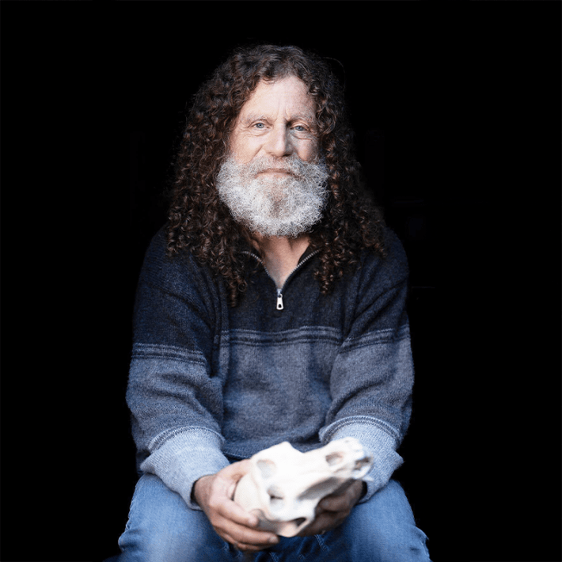
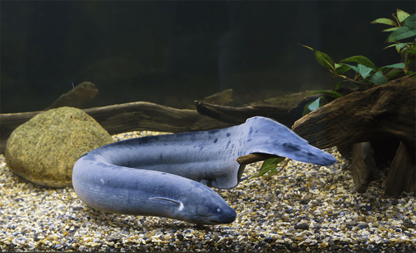
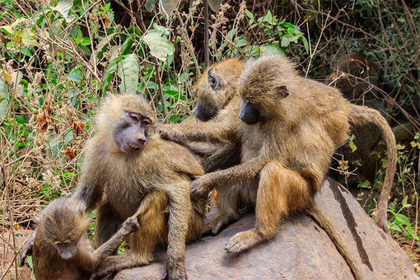
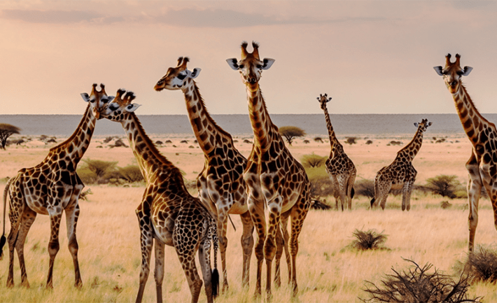

I like nature shows asmuch as anyone. Who doesn’t love watching the magnificent animals on our planet? But these shows seldom turn their cameras on the most dominant animal on Earth.
It’s a pretty progressive attitude to see ourselves as just another animal crisscrossing the lands and seas. For centuries Western culture assigned humans to First Class, the rest of the animals to steerage. But we evolved like every other animal from a common microbial ancestor way, way back in the day. And like every other animal, the sands of time carved us into the creatures we are today. So, I’ve been wondering, what does it mean to see ourselves as animals? Does it change how we treat other life on Earth? How are we like our fellow animals? What makes us different?
I didn’t think twice about who I wanted to ask. I’ve probably learned more about humans as animals from Robert Sapolsky than any other scientist. And that’s because the primatologist and neuroscientist, renowned Stanford University professor and lecturer, writes with a sense of humor that seals the science in your memory. In our recent conversation, I told Sapolsky about a scene I couldn’t forget in his book, A Primate’s Memoir, about the beginning of his career on the Serengeti, hanging out with baboons.
Sapolsky darted baboons with a tranquilizer so he could analyze their blood. He was keen on measuring the stress markers in their blood, particularly in the baboons who ranked low in their troop hierarchy, whose stress levels were off the charts, ravaging their health. One day Sapolsky darted a baboon who ran into a small cave of thorn bushes with a small impala in its mouth. Sapolsky was certain other baboons would soon cram into the cave and rip apart their drugged mate for the impala. If Sapolsky went into the cave to get his blood sample the half-tranquilized baboon would rip him apart. Sapolsky scared away the other baboons by screaming and ventured into the thorny cave to find the baboon asleep. When he rolled the baboon aside to draw his blood, the impala sprang to life and kicked him in the forehead, opening a big gash.

BORN TO BE WILD:When he was a kid, Robert Sapolsky wanted to live inside the African dioramas at the Museum of Natural History in New York. Courtesy of Christine Johnston.
“Here I am, figuring out a way to avoid all this craziness with these mad aggressive male baboons and I’m about to be killed by Bambi,” Sapolsky wrote.
Sapolsky smiled darkly when I reminded him, perhaps remembering when he almost bought the farm before his career took off. “Oh, god, that was ironic, wasn’t it?” he said dryly.
Thankfully Sapolsky continued to study baboons for the next three decades and write books that continue to light up the minds of readers. His studies of stress form the basis of one of his most influential books, Why Zebras Don’t Get Ulcers, whose takeaway is humans are killing themselves with stress, not from outrunning predators but worrying about imagined problems.
Sapolsky set the science world chattering with his conviction that humans don’t have free will in his most recent book, Determined. With his characteristic mix of neuroscience and examples of animal and people behavior from cultures around the world, Sapolsky explains why “the biology over which you had no control, interacting with the environment over which you had no control, made you you.”
Sapolsky has written a host of articles for Nautilus, and I’ve been his editor. We had a great time recently talking about what makes us the animals we are, and as ever, Sapolsky took my questions into unpredictable directions, displaying his natural gift for perspicacity and humor.
Let me get a little David Attenborough on us. Earth is home to such an amazing range of animals. What do you think about when you consider the panorama of animals on our planet?
Besides being spectacular, it’s a pretty good indication that this Darwin guy was right. You want to grab a Creationist by the ear and say, “You’re going to tell me that every one of the lemurs got off Noah’s ark and happened to swim to Madagascar and leave no fossils along the way?”
Do you remember when you first arrived on the Serengeti to study baboons?
You always wish you could have that first day again. It was exhausting how hard you were looking at things, and listening to things, because everything was so sensorially vivid.
In all your years of studying baboons in the wild, did you ever think about what the baboons could teach us about ourselves?
Well, they could teach us that hierarchy exacts a toll on everyone, especially the ones stuck on the bottom. But their goals are not the same as ours. And their ability to effectively act out their goals is certainly not like ours. That’s usually because they have no prefrontal cortex. Every time it would make sense to do something strategically, they invariably blow it by being impulsive.
And baboons don’t do object-permanence. If the baboons are getting all crazed and agitated and threatening you because you just darted somebody, you cover the darted baboon with a burlap sack. Then he’s gone, not there anymore to the other baboons. They instantly settle down.
So, yeah, early on, it was apparent we’re not baboons, we’re not chimps, we’re not bonobos. But the ways in which we turned out to be different were subject to the same rules by which they turned out to be who they are.
Humans are generalists. We’re half-assed at an enormous number of things.
Which reminds us we are animals ourselves. Baboon, human, iguana, cricket—we’re all shaped by evolution in our own ways, none more important than the other. Although, when I say that, I do wonder whether we really believe it.
The pull of exceptionalism is pretty strong. But we are exceptional in one way: We’re the only species who could say, “Be distrustful of intuitive exceptionalism.”
Good point!
But, yeah, it does take some detachment. It takes someone like Peter Singer building a whole movement around the fact that animals have emotions, too. But there’s absolutely no clear-cut rules as to where a line should be drawn. We really don’t think, and I assume Peter Singer doesn’t think so either, that a fly has the same moral rights to have its needs considered as a human does. There’s a line somewhere, but how the hell do you figure out the line? Subjectivity is pretty major at that point. We’re just like other animals until we reach some critical realm where we’re not just like them. And that seems to be a meaningful dichotomy.
Do you think there’s a moral or social good of thinking of ourselves as just another animal?
Insofar as we should be suspicious of framing anything as a moral good, treating other living organisms better is, yes, a good thing. The most fascinating aspect is the historical trend that shows when a society starts having animal protection laws, that’s a good predictor that they’re not far away from having laws that say you can’t have 5-year-olds work themselves to death at textile factories. Logically, that should have been in the other direction. But prevention-of-cruelty animal organizations have been a good predictor that protection for other humans is going to expand as well.
Alas, we became the animal who dominates all the others. We’ve altered every animal ecosystem on the planet.
And that could be a karma thing. It turns out that being a bacteria or virus can make you more adapted to life than humans. They’ve come up with evolutionary tricks that we don’t have. They can evade our immune system. Just when you get antibodies that are going to recognize them, they switch their surface protein so they’re invisible again. They’re more adapted for doing us in than we’re adapted for inventing antibiotics. Which is a great irony. For all the ways in which we evolved to have lots of neurons and be capable of creating all these incredible and destructive things, it turns out, oh, my god, it’s a single-cell organism that eradicates us.

GENES DON’T MAKE THE PERSON: A species of lungfish has the same number of genes (20,000) we have. Photo by Galina Savina / Shutterstock.
What do you think of E.O. Wilson’s idea of “biophilia,” that we have an inborn affinity for other forms of life?
I think it’s fair to say that there’s something damaged about a person who sees a giraffe in front of them for the first time and doesn’t feel compelled to stare at this thing for, like, forever. But we dole out empathy very unequally. There’s a reason why pandas are much more likely to not go extinct than some disgusting lamprey. I like mammals. Some reptiles don’t do much for me. But there’s people out there who obviously love their gigantic snake and give over half their apartment to keep it safe.
Do you think biophilia is innate?
I think it’s innate in the ethological sense of prepared learning. We are not innately phobic about spiders or snakes. But it sure is easier to condition someone to be afraid of a snake than to a Basset Hound. It’s easier for us to decide that mountains are more beautiful than public-housing projects. So, it’s innate in that we have a lower mental threshold for making some associations. We have a lower threshold for deciding sunsets are amazing and parking meters are not.
It’s affecting to know we and other animals are made of the same biochemical stuff, don’t you think?
Absolutely. But it speaks to this weird, convenient thing that both sides of animal-rights debates do. If you’re PETA, one of your strategic tools is to say that animals’ physiology is different from ours and we can’t learn from a lab rat or monkey. There’s no continuity between us and animals. Look at what happened with things like thalidomide that appeared to be safe in animal studies and then wasn’t for humans.
On the other hand, there is utter continuity with animals in the capacity for pain and emotional upset, to be frightened and lonely. But for the scientists who are indifferent to animal suffering, their argument is that there is complete continuity between us and animals, while there’s no continuum for emotions or capacity for suffering. Each side is conveniently choosing which piece of the similarity argument they accept and which they don’t.
It’s easier to condition someone to be afraid of a snake than a Basset Hound.
As you were saying about baboons and humans, we’re different, but in light of evolution we originated from a similar blueprint.
Right. And we’re totally different in ways that are unprecedented. We get upset about what happens to characters in a movie. We do the same for humans on the other side of the planet we’re never going to see. But we use the same hormone, oxytocin, when we are feeling protective of those characters that a narwhal mother would use for its baby.
I mean, the biochemical pathway that a sea slug uses when it’s learning condition-avoidance is the same one that we use in the hippocampus. You could trade out the genes that code for the avoidance pathway and they work the exact same in the sea slug and us. You could take human genes for programmed cell death and stick them in bacteria and the bacteria would die exactly the way they’re supposed to.
So, Whoa! Evolution is amazing. Or, maybe, there for the grace of god, I could have wound up being a warthog.
Very true! But knowing we share a blueprint with warthogs can maybe inspire compassion for them and other life on our planet.
Humility, too. If you’re like Ed Yong and delve into that literature, you learn, damn, there’s a lot of organisms out there that run circles around us in very specialized ways. As animals, we’re generalists. We’re half-assed at an enormous number of things. But, oh, my god, some animals see in ultraviolet light. Mantis shrimp can punch out the glass on a fish tank or break your nose because of their musculature. Some animals see in 17 different wavelengths. Some humility has to come out of that. And maybe that affective continuity can take us to feeling an imperative as to who should be protected from pain.
I read recently about a species of lungfish in South America that has 30 times the amount of DNA that we do, and about the same number of genes (20,000), and, well, I know this might not come as a surprise to you, Robert, but we are nothing like lungfish. So, really, when it comes to being human, what do genes have to do with it?
Not much. To appreciate that, unpack the cliche that we and chimps have 98.5 percent of the same DNA. And take that one step further and say, OK, where are the gene differences between us and chimps? Half of the genetic differences are about genes for olfactory receptors. In our evolution, we’ve turned them off and chimps still have them active. They have a better sense of smell than we do. The remaining half of different genes have to do with whether you grow hair on your shoulders, where you wind up being furry. But there’s next-to-no brain genes that differ.

WHAT A TROOP:Robert Sapolsky studied the fascinating ways of baboons in the wild for more than 30 years. Photo by Olha Solodenko / Shutterstock.
Some human genes for cognition do differ from other primates, though, right?
Right, but look at the ones that are different. They tend to be related to cell-cycle differences, how many rounds of division cells go through. What that tells you is if you want to turn a chimp into a human, just let its brain go through two or three more rounds of cell division when it’s making neurons, and it will invent theology, aesthetics, and social political theory. With enough quantity, you get quality. With a cell-cycle division that goes through enough rounds, you get enough neurons to do human stuff instead of regular old ape stuff.
In one of your Nautilus articles, “Metaphors Are Us,” you write that one trait that makes us uniquely human is we’re not very good at distinguishing between the metaphorical and the literal. Symbols and metaphors are “the product of clunky processes in our brains.” I love that. What makes us unique is a bunch of clunky brain processes.
Evolution is not an inventor, it’s a tinkerer. In the last couple years, a great example of the brain being clunky is Ozempic. Everybody on Earth is taking Ozempic to lose weight because, among other things, it makes you feel full. Satiated in terms of food. That’s great. And we understand exactly what Ozempic is doing in the hypothalamus.
But it also makes compulsive gamblers less compulsive. It’s being pioneered for treatments for substance abusers. You might say the comparison between an appetite for food and appetite for gambling is just a stupid metaphor. But our brain falls for it. Being hungry for a big gambling payoff has some biological similarities to being hungry for high-fat, high-carb things when you’re stressed. This drug turns out to be able to tap into all of that because that’s the clunky way our brains work.
When it comes to being human, what do genes have to do with it?
One metaphor that seems woven into our brains regardless of our culture is blaming some cruel or violent act on our “animal nature.”
Or flip it another way. Yes, we’re the most violent species on the planet. But it’s our animal nature that also makes us compassionate, altruistic, and cooperative. Not only that, but the same individual is capable of both extremes. Whether a behavior counts as extreme is in the eye of the beholder and culture. Someone commits a violent act, and half the people say they’re a terrorist and the other half say they’re a freedom fighter. That comes from the same building blocks in other animals. A baboon mother can be very altruistic to her kid and protect it if there’s a lion around. At the same time, she could be a total jerk to the female who’s lower ranking than her.
It’s nice to hear that being compassionate and cooperative is also ingrained in our nature.
Do you know the studies by Peggy Mason and others at the University of Chicago? They’ve shown that rats will press a lever to free their fellow rat from being restrained in a chamber. The trapped rat is emitting like stress vocalizations and stress pheromones. When given a choice to eat the greatest thing on Earth for a rat, a little piece of chocolate, or free the other rat, the rat presses the lever to free the other rat. That’s amazing!
But then you look closely and the choice comes with the same fine print as it does with us. The trapped rat has got to be a rat it knows. It’s got to be a rat that is a cage mate or who is of the same inbred strain so that they smell like a relative. And if it’s some stranger rat, screw them, I’ll take the chocolate. So, the capacity for empathy comes with all sorts of loopholes.

GAWKER:Do we have an innate affinity for other animals? Who can stop from staring at giraffes? Photo by Sajedul Islam Alif / Shutterstock.
Oh, boy, that does sound like humans.
Let’s say you suddenly find yourself in the middle of Zambia, and you run into a bunch of Americans, and you get to talk about football. Even if you hate football, you think, damn, that’s grounds for feeling I’d give my life up for them. Organisms like organisms who are familiar to them. Faced with ones who are different, your first reflex is one of vigilance, not pro-social behavior. Oh my god, what an embarrassing thing to admit: You’re a liberal and love diversity and all of that, but wow, it’s kind of nice to go to a restaurant that serves food like my grandmother made. These are basic animal things.
How do you define humanity?
Hmmm. We’re the species with some of its most interesting behaviors occurring only in groups. Individuals are capable of being much better than their usual selves and much worse than their usual selves when they’re in groups. Groups amplify emotional volumes. Large groups. Intellectually abstract groups. You will give your life up for a co-religionist from the other side of the planet if you have the right inculcation. Weird stuff happens when we come together in groups.
Humanity to me means all the good things about being human: humility, compassion, having a conscience, being curious. But it’s hard to deny that right now humanity seems in short supply. Wouldn’t you agree?
I had some reservations about Steven Pinker’s The Better Angels of Our Nature, mainly because I thought he’s much too much of a fan of European Enlightenment, and he needs to factor in how much of peace in Europe in the last half century has been because we figured out how to have proxy wars in the developing world.
But there’s a whole lot more people now who say slavery is a bad thing than people would have said 400 years ago. We can send food to someone in Sudan and we couldn’t do that 400 years ago. There’s a sizable majority of people who say it’s not good to beat your horse to death because it’s not hauling your cart. That wasn’t the mindset 400 years ago.
On the other hand, the thug in your village hamlet 400 years ago used a machete to kill someone. Now they have an automatic weapon and can kill 50 people. It’s just that our ability to be both bad and good is so amplified now.
Whether humanity is doomed depends on tipping points. If the ice caps melt and we lose half the land mass on Earth, that may be a tipping point that swamps any ability to press a button and have charity delivered to someone on the other side of the planet.
It sounds like our defining trait as humans is we’re the species who amplifies.
That’s wonderful, yes, we’re the species who amplifies. We don’t have to be malicious. It’s just that it’s a whole lot easier to amplify destructive than constructive things. So, yes, things do get better. It’s just whether it’s going to get better fast enough to outweigh the stuff that goes bad.
Care to cast your vote?
Because it’s easier to make a mess of things than to put things together, that’s probably a vote for amplified badness having a pretty good chance of swamping amplified goodness. 
Lead photo by WhirlVFX - Pamela Werrell / Shutterstock